The Frame package implements a standard tetrad formalism in which one sets up a basis of four contravariant vectors that form a ``connection'' between the tensor and frame indices (following Chandra, ?? ref):
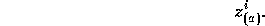
The index enclosed in parenthesis distinguishes tetrad indices from normal tensor indices. As well, we may define the covariant vectors
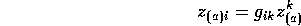
and the matrix inverse of 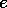 such that:
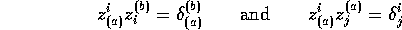
and we may also define a constant symmetric matrix 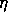 so that
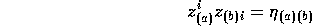
and
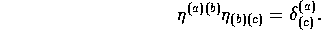
This matrix functions as a metric for the tetrad indices, and can be used to raise and lower indices. This ``metric'' is often assumed to be diagonal and Minkowskian so that the vectors 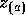 form an orthonormal basis, but other forms can also be assumed, as shown below.
An important relation between the tensor metric and the connections exists:
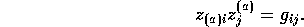
The tetrad components of any tensor can be found via
and the tensor components of a tetrad can be found via the inverse relation:
In REDTEN the tetrad metric is created via the function frmetric(), which by default creates a metric of the form
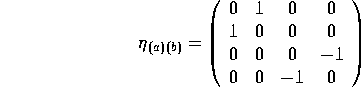
and with a non-nil second argument creates a Minkowskian metric. For example,
#: frmetric() computing eta1 cofactor finished. determ finished. invert finished. eta1creates a frame metric of the first type, while
#: frmetric(nil, t) computing eta2 invert finished. eta2creates a Mikowskian frame metric. Note that the second argument to frmetric() should not be quoted. frmetric() makes default metric names in the same way as metric() does for tensor metrics: a base name followed by a sequence number. The default base name is eta which is the value of frmetric. The optional first argument to frmetric() can be used to create a metric with another name. In all cases the target of the generic name eta is set to be the newly created metric.
To use the frame package the user must determine in advance the structure of the particular tetrad 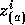 for the chosen metric. These are entered into the system and, along with the frame metric, the tensor metric can be constructed from them with the function tenmetric() (see below). In the current implementation the user must enter components for the 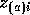 and declare this as a connection via the setcon() command. Again using the Kerr metric as an example, we have
#: coords '(t r th ph);
#: frmetric();
computing eta1
cofactor finished.
determ finished.
invert finished.
eta1
#: mkobj ('(l n m), '(-1));
l
a
n
a
m
a
#: ias (l);
l[0] = 1;
l[1] = -rho2/delta;
l[2] = 0;
l[3] = -a*sin(th)^2;
l
#: ias (n);
n[0] = delta;
n[1] = rho2;
n[2] = 0;
n[3] = -a*delta*sin(th)^2;
n
#: ias(m);
m[0] = i*a*sin(th);
m[1] = 0;
m[2] = -rho2;
m[3] = -i*(r^2+a^2)*sin(th);
m
#: complex (rhob)$
#: let r^2=sin(th)^2*a^2-a^2+rho2$
#: let rhob*cnj(rhob)=rho2$
#: mkobj('z,'(2 -1),'(),'(),'connection);
a
z
b
#: z[0,i]==l[i];
0
z = l
i i
#: z[1,i]==n[i];
1
z = n
i i
#: z[2,i]==m[i];
3
z = m
i i
#: z[3,i]==cnj(m[i]);
3
z = cnj (m )
i i
#: setcon (z);
z
This is the Kinnersley frame used to set up a null-tetrad as the basis
of the Newmann-Penrose formalism (see §6.3). The frame is
specified by the vectors 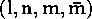, where the bar over 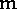 indicates complex
conjugation. These vectors are copied into the mixed form of 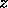,
which then has the first tetrad index lowered via the frame metric to
form the connection.
Note that the tensor index cannot be raised yet, since the tensor
metric does not exist.
At this point it is convenient to discuss the complex arithmetic package in REDTEN. Other complex packages may exist and could be used in place of the one supplied with REDTEN, but they must use the function cnj() to carry out conjugation, since this name is coded into the REDTEN source.